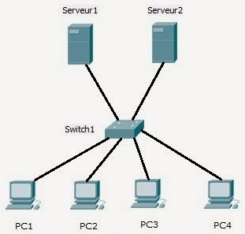

Exercice 1 :
Soit l'adresse : 192.16.5.133 /29.
Question 1
Combien de bits sont utilisés pour identifier la partie réseau ? Combien de bits sont utilisés pour identifier la partie hôte ?
- Une piste...
- Une correction...
/29 est la notation CIDR d'un masque de sous-réseau.
Address: 192.16.5.133, soit 11000000.00010000.00000101.10000 101
Netmask: 255.255.255.248 = 29 bits à 1, soit 11111111.11111111.11111111.11111 000
Donc, la partie réseau comporte 29 bits et la partie hôte 3 bits
Question 2
Combien de machines peut-on mettre dans ce sous-réseau ?
- Une piste...
- Une correction...
Pour un mot binaire de n bits, nous avons 2n combinaisons possibles.
Nous avons vu qu'il restait 3 bits pour la partie hôte, nous avons donc la possibilité de brancher 23 hôtes (machines) sur ce réseau.
Attention toutefois car il ne faudra pas attribuer l'adresse réseau et l'adresse de broadcast.
Exercice 2 : Réseau d'une TPE

Vous travaillez dans le cabinet comptable S.A Compte. Tous les ordinateurs du cabinet sont en
réseau comme sur l’illustration. Nous sommes en présence d’un réseau utilisant le
protocole TCP/IP. Les adresses IP de chaque nœud du réseau sont listés dans le tableau suivant. Pour tous, le
masque par défaut est 255.255.255.0.
Adressage IP du réseau
| PC1 |
192.168.10.6 |
|---|
| PC2 |
192.168.10.7 |
|---|
| PC3 |
192.168.10.8 |
|---|
| PC4 |
192.168.10.9 |
|---|
| Serveur 1 |
192.168.10.100 |
|---|
| Serveur 2 |
192.168.10.200 |
|---|
Question 1
Quelle est l’architecture de ce réseau ?
Question 2
Indiquer quelle est l’adresse IP du réseau.
Question 3
Déterminer le nombre de machines qu’on peut brancher dans ce réseau.
Question 4
Quelle est l’adresse de diffusion de ce réseau ?
Question 5
Quels sont les différents sous-réseaux obtenus si le 4 ème octet du nouveau masque est : 11000000
Dans ce cas les machines pourront-elles encore communiquer ? Expliquer.
Comment peut-on y remédier ?
- Il s'agit d'un réseau en étoile
- L’adresse IP du réseau est : 192.168.10.0
- Ce réseau peut contenir 28-2 =254 hôtes
- L’adresse de diffusion de ce réseau est : 192.168.10.255
- Les sous-réseaux sont les suivants :
- - 192.168.10.0 /26
- - 192.168.10.64 /26
- - 192.168.10.128 /26
- - 192.168.10.192 /26
Exercice 3 : Sous-réseaux
Problématique:
Si on souhaite créer un réseau de 1 millions de machines par exemple, il faut utiliser un réseau
de classe A. Or, dans ce cas, on perd 15,7 millions d’adresses qui ne seront plus disponibles pour
le reste du monde. Ce gaspillage qui a été fait au début d’Internet n’est plus tolérable depuis de
nombreuses années, la totalité des adresses disponibles ayant été distribuées. Pour les
économiser, on a défini la notion de sous-réseaux (SUBNET).
Dans ce cas, la dernière valeur non nulle du masque peut prendre une valeur autre que 255 ou
0 pour définir ce sous-réseau : Ce sera un nombre décimal correspondant à un nombre binaire
composé de 1 contigus en poids fort (1000 0000 ou 1100 0000 ou 1110 000 ou 1111 0000 ou 1111
1000 ou 1111 1100) soit en décimal (128 ou 192 ou 224 ou 240 ou 248 ou 252 ).
Ainsi on utilise des masques de sous-réseau tels que :
- 255.255.224.0 → définit un sous-réseau d’un réseau de classe B
- 255.240.0.0 → définit un sous-réseau d’un réseau de classe A
- 255.255.255.192 → définit un sous-réseau d’un réseau de classe C
Soit l'appareil connecté ayant les caractéristiques réseaux suivantes :
- Adresse IP : 192.168.101.100
- Masque : 255.255.255.224
- Adresse Réseau : 192.168.101.96
Question 1
Vérifier que l'adresse réseau de cet appareil vaut bien 192.168.101.96
Question 2
A l'aide du masque, identifier le NetID et le HostID de l'exemple et déduire le nombre
d'adresses hôtes disponibles.
Question 3
Écrire les adresses minimum et maximum associées à ce subnet, et déduire la plage
d'adresses disponibles pour les hôtes.
Question 4
Dans la liste ci-dessous, cochez les machines qui appartiennent à ce sous-réseau,
sachant qu’elles ont toutes le masque 255.255.255.224 :
- 192.168.100.102
- 192.168.101.120
- 192.168.101.92
- 192.168.101.100
Question 5
un peu plus difficile...
Combien peut-on faire de sous-réseau avec ce masque 255.255.255.224 dans le réseau
de classe C 192.168.101.0 ?
- Réponse Q1
- Réponse Q2
- Réponse Q3
- Réponse Q4
- Réponse Q5
N'importe quel mot binaire associé, avec un ET logique, à un masque en 255 vaut le mot binaire.
Donc,
(100)10 ET (255)10 =
(100)10.
(100)10 =
(01100100)2, donc
(01100100)2.
(11100000)2=
(01100000)2, soit
(96)10
L'adresse réseau est donc bien 192.168.101.96
Le masque vaut 11111111.11111111.11111111.11100000
La séparation entre le Net-ID et le Host-ID se fait donc entre le 27ème et le 28ème bit. 5 bits sont donc
disponibles pour les hosts (machines), ce qui représent 25 -2 hosts, soit 30 (on exclut
l'adresse réseau et l'adresse de diffusion).
L'adresse IP mini correspond à l'adresse réseau et donc aux 5 derniers bits à 0 : (11000000.10101000.01100101.01100000)2 = (192.168.101.96)10
L'adresse IP maxi reprend le début de l'adresse réseau avec les 5 derniers bits à 1 : (11000000.10101000.01100101.01111111)2 = (192.168.101.127)10
La plage d'adresses est donc de (192.168.101.96)10 à (192.168.101.127)10.
A noter que la dernière adresse est l'adresse de broadcast du réseau : (192.168.101.127)10.
Plus dur !
Le masque 255.255.255.224 permet 25 hôtes (5 bits pour les machines). Un réseau de classe C permet d'avoir 28 hôtes. On peut donc avoir 28 / 25 = 8 sous-réseaux avec ce masque 255.255.255.224.
Exercice 4 : Sous-réseaux dans un gros lycée
L'adresse IP d'une machine du LPO Aragon avec son masque est la suivante :
172.18.15.100/21
Question 1
Donner en binaire, puis en décimal, le masque de sous-réseau
- Une piste...
- Une correction...
/21 est la notation CIDR.
Masque en binaire (21 bits à 1 en continu) : 11111111 . 11111111 . 11111000 . 00000000
Traduction décimale : 255.255.248.0
Question 2
Quelle est l’adresse du réseau sur lequel se trouve cette machine ?
- Une piste...
- Une correction...
Pour calculer une adresse réseau, on utilise l'opérateur binaire ET : Ip ET Masque
L'adresse de réseau est donc 172.18.8.0
Question 3
Combien peut-on avoir de machines (hôtes) sur ce réseau ?
- Une piste...
- Une correction...
On regarde combien de bits étaient attribués à la partie host du masque...
Nous avions 21 bits pour la partie réseau, il en reste 11 pour les hosts, soit 211-2 = 2046 machines (sans adresses réseau et diffusion)
Question 4
Donner l'adresse de broadcast de ce réseau ?
- Une piste...
- Une correction...
A partir de l'adresse réseau et du nombre de machines, on trouve l'extrémité haute du réseau.
Le réseau s'étend de 172.18.8.0 -> 172.18.15.0, l'adresse de broadcast est donc 172.18.15.255.
Question 5
Proposer un découpage d’adressage IP pour le réseau du lycée Aragon Picasso composés de 3 sites :
- Site Aragon qui dispose de ~700 machines connectées (dont la machine en 172.18.15.100/21)
- Site Picasso ~300 machines
- Site SI, STI2D ~350 machines
- Une piste...
- Une correction...
300 et 350 sont compris entre 0 et 512.
700 est compris entre 512 et 1024.
SI,STI,ISN : 172.18.8.0 → 172.18.9.255 (512 adresses)
Sully : 172.18.10.0 → 172.18.11.255 (512 adresses)
Esplanade: 172.18.12.0 → 172.18.15.255 (1024 adresses)
A noter qu'il ne s'agit pas du vrai adressage du Aragon ...
Source des exercices